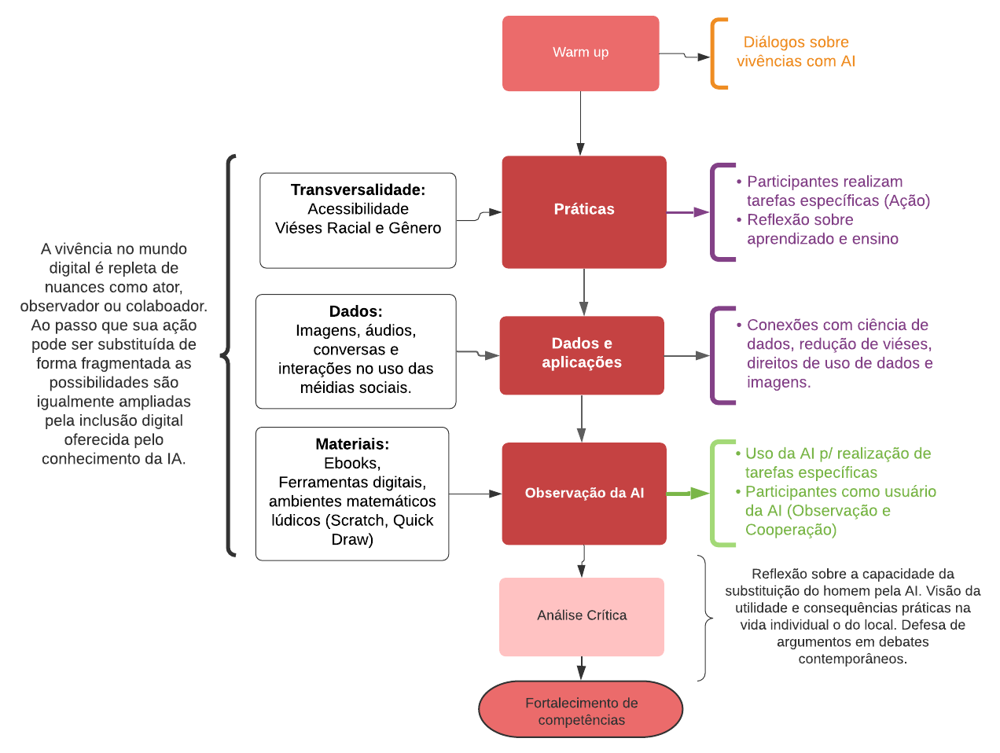

3 Relatório de Inteligência Artificial
3.1 Introdução
A disciplina “Inteligência artificial, a divertida mente das máquinas” imerge no universo da inteligência artificial através da experimentação e interação com ferramentas gratuitas e de fácil acesso. Sendo assim, o ensino-aprendizagem é conduzido de maneira lúdica com a confecção e interação com jogos e algoritmos baseados nos conceitos de inteligência artificial presentes nos dias atuais. Para tanto, propõe-se a estimulação do senso crítico e investigativo dos alunos através da proposição de soluções para problemas da escola e comunidade local com o auxílio da inteligência artificial, permitindo um contato direto com sua realidade e desmistificando a complexidade das tecnologias envolvidas nessa área.
3.2 Metodologia
A disciplina de inteligência artificial é constituída de aspectos peculiares, que tornam a sua elaboração tão mais eficaz quanto mais for capaz de posicionar o estudante como aprendiz, similar às etapas de calibração do modelo de inteligência artificial. Portanto, a estratégia consiste no uso de práticas, atividades e debates nos quais cada participante atua, realiza tarefas específicas ligadas ao uso de tecnologias. Em seguida, é promovido um debate mediado pelo instrutor buscando um consenso e o respeito pelas diferentes formas de desenvolvimento das atividades. Estabelecida a natureza estatística das perspectivas de aprendizado, são experimentados recursos digitais baseados em modelos de AI que simulam comportamentos humanos, como uma conversa, capacidade de reconhecimento de desenhos ou mesmo a escrita de textos (como os casos de fake news). Nesta etapa o estudante é substituído por uma inteligência artificial, então é colocado na posição de observador, gestor ou num sistema cooperação. Desta relação são estimulados aos debates tão atuais entorno dos aspectos éticos e práticos dessas aplicações. Sendo enriquecido pela plena inteface com os métodos de preparação dos bancos de dados (tema mais intensamente trabalhado em Ciência de Dados) utilizados pelas IAs bem como os aspectos modernos das redes sociais e suas conexões com sistema de recomendações. Nas dinâmicas de retorno dos encontros, são realizadas atividades que desenvolvem habilidades específicas ao universo de linguagem, aprendizado e inteligência artificial por meio de ferramentas LOGO.
